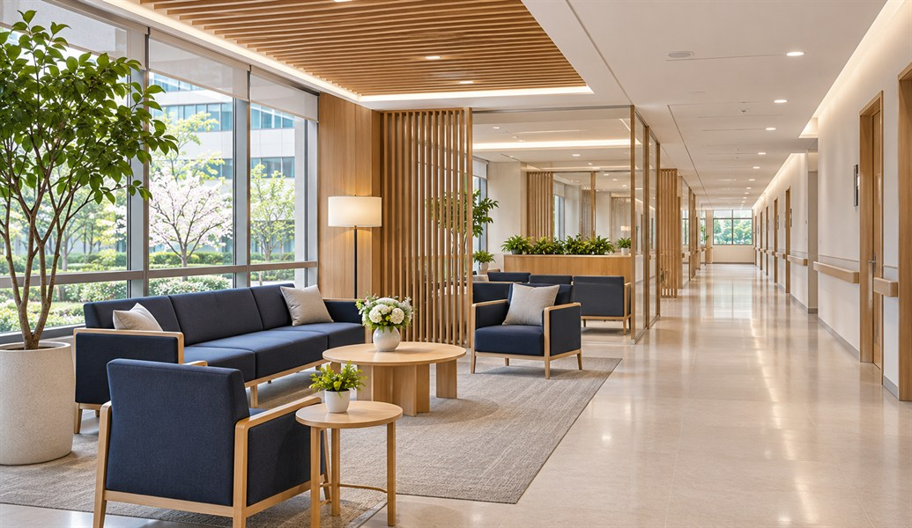
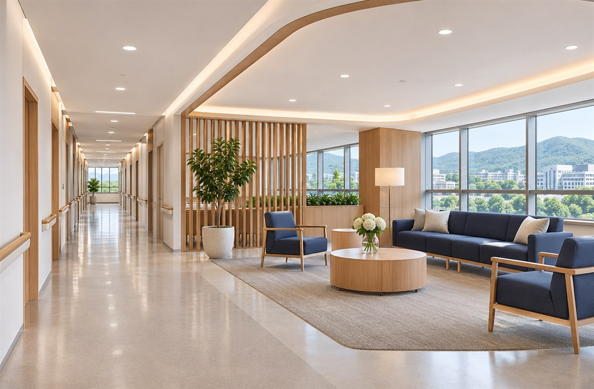
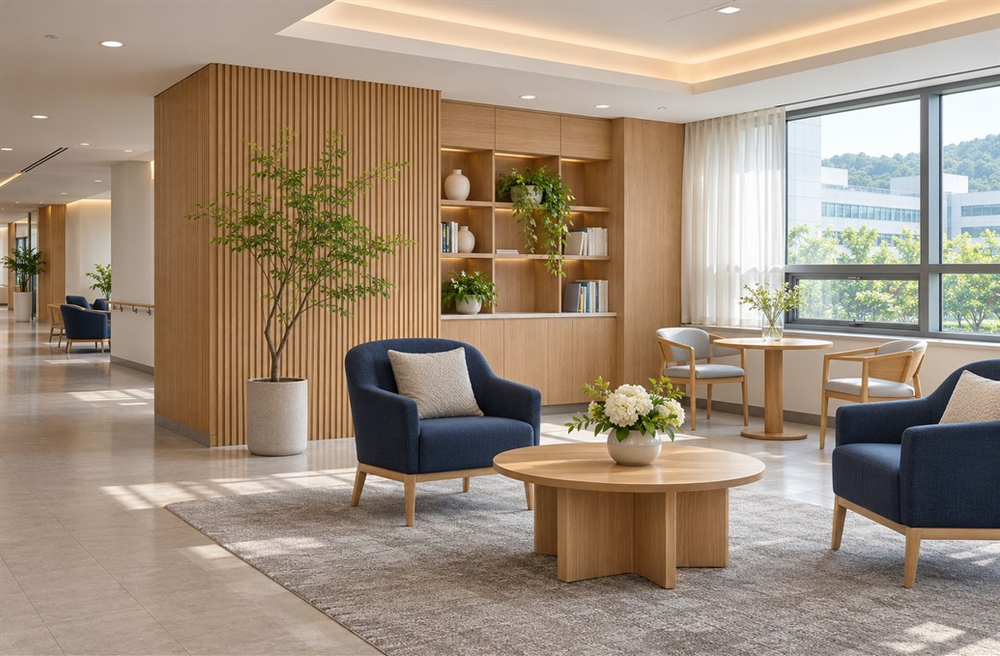
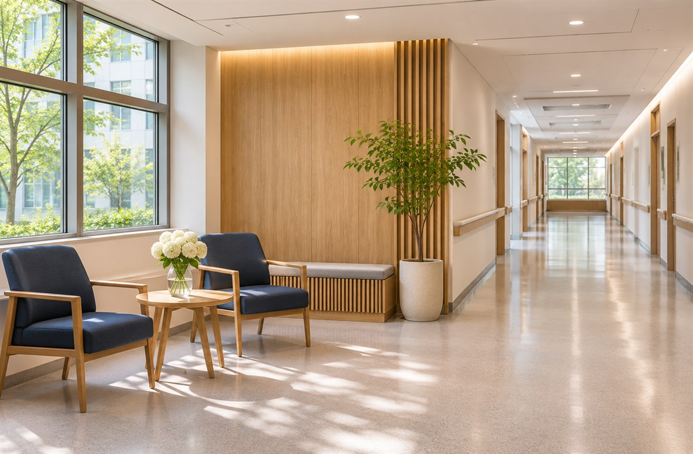
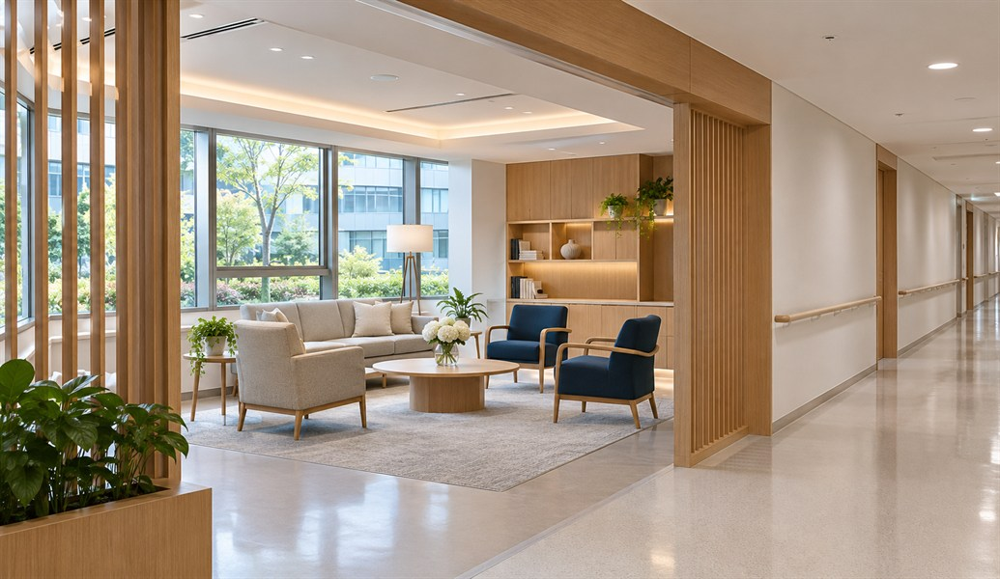
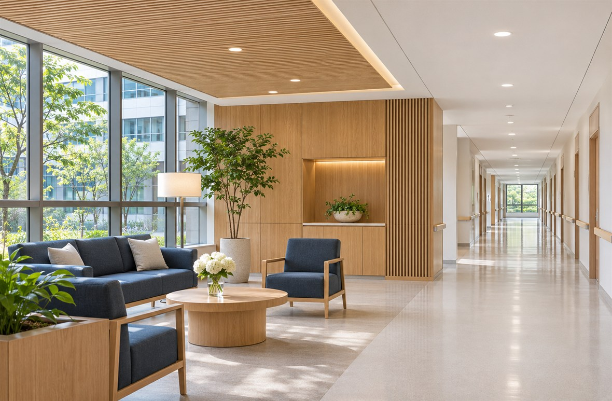
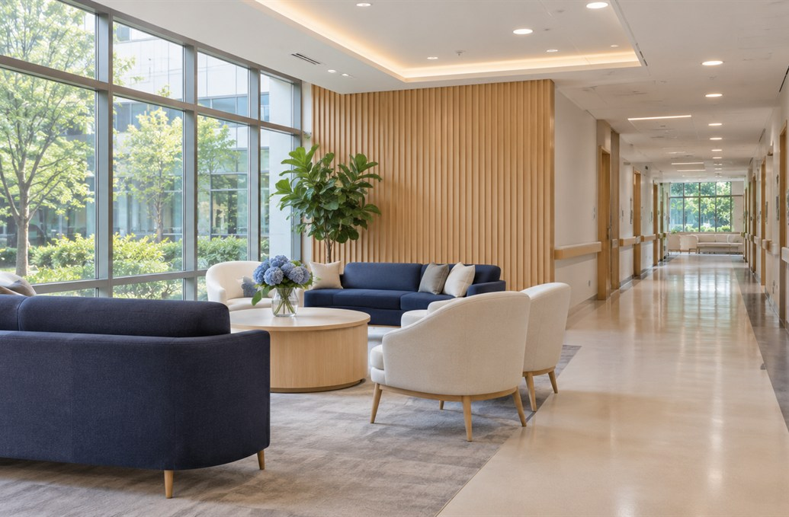
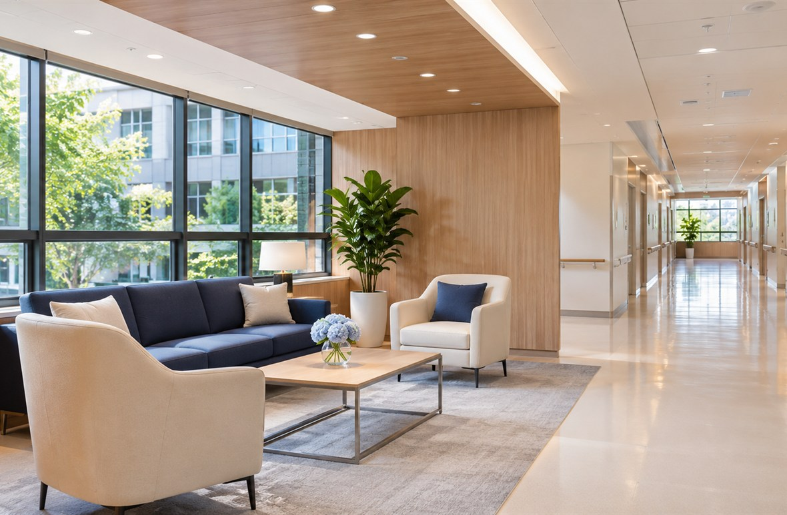
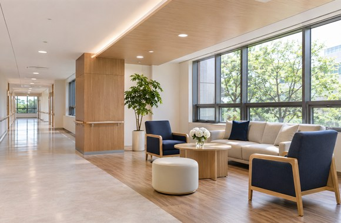
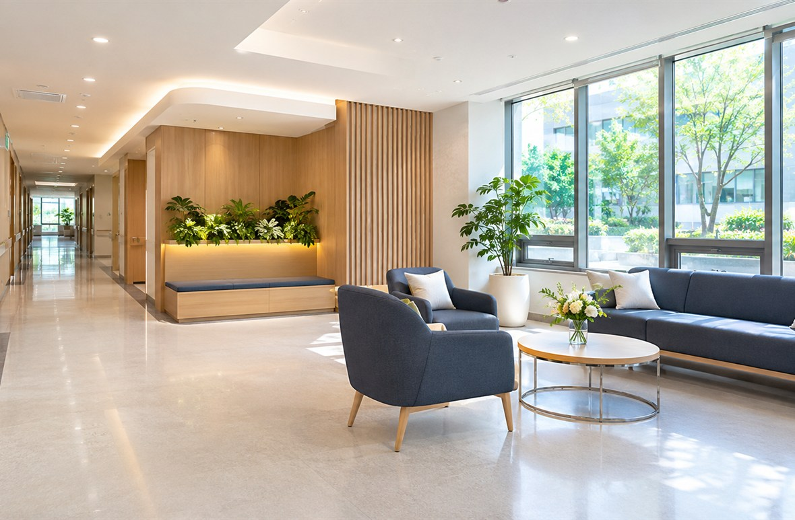

편의시설
편의시설 · 환자와 방문객이 이용하는 병원 내 시설입니다.










시설 위치
| 시설 | 위치 | 이용 안내 |
|---|---|---|
| 식당 | 지하 1층 | 운영 여부와 이용 시간은 현장 안내를 확인합니다. |
| 의료용품 판매점 | 1층 로비 | 필요한 물품은 판매점에서 확인합니다. |
| 편의점 | 1층 로비 | 운영 시간은 현장 게시 안내를 확인합니다. |
| 휠체어 대여 | 1층 정문 | 대여 가능 여부를 안내 창구에 문의합니다. |
| 무인 민원 발급기 | 1층 정문 | 발급 가능한 문서 종류를 기기 화면에서 확인합니다. |
| 현금 인출기 | 1층 정문 | 금융기관별 이용 기준을 따릅니다. |
| 카페 | 1층 로비 | 음료와 휴식 공간 이용은 현장 안내에 따릅니다. |
| 옥상 정원 | 5층 | 출입 가능 여부는 병원 운영 안내를 확인합니다. |
| 퇴원 환자용 카트 | 각 병동 | 필요하면 병동 직원에게 문의합니다. |
| 장애인 화장실 | 각 층 | 가까운 위치는 층별 안내에서 확인합니다. |
이용 중 필요한 도움
휠체어와 퇴원용 카트가 필요한 경우 가까운 안내 창구나 병동 직원에게 요청해 주세요. 무인 발급기 이용에 도움이 필요하면 발급 창구에 문의할 수 있습니다.
시설별 운영 시간과 이용 가능 여부는 병원 운영 상황에 따라 달라질 수 있으므로 방문 당일 현장 안내를 확인해 주세요.